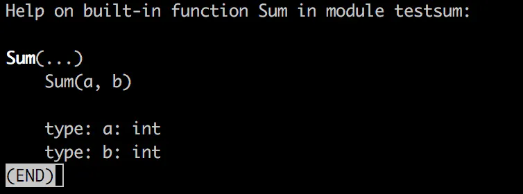
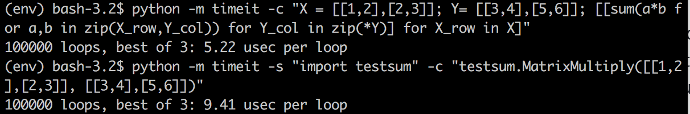

Extending Python has been a core feature of the platform for decades, the Python runtime provides a “C API”, which is a set of headers and core types for writing extensions in C and compiling them into Python modules.
But, do you really have to write extensions to Python in C? Why can’t we use something a tad more modern, like Go.
Extending Python has been a core feature of the platform for decades, the Python runtime provides a “C API”, which is a set of headers and core types for writing extensions in C and compiling them into Python modules.
But, do you really have to write extensions to Python in C? Why can’t we use something a tad more modern, like Go.
I found a number of old articles written in 2015 either for Python 2 or for Go 1.5. Go has changed a lot since then so finding something up to date and well maintained was hard.
This
article was
for Go 1.5, and uses a mixture of C macros and Go. Also, a big
limitation of cgo
instead of the native Go functions is that it doesn’t support
variadics (i.e. *args),
which will be a big issue in most Python modules.
gopy, a tool for automatically creating modules from Go packages. It seemed from a glance like it was going to cause issues because it required a particular flag at compile-time which is not recommended in production. Also, it doesn’t support Python 3.
go-python looked like a good candidate but was written for the Python 2 bindings.
py looked very incomplete, only covering some of the basic Python API.
Other examples I found used the cffi package, so consumption of the code doesn’t feel like a module, it’s just a way to call Go compiled methods. Neither does it have native bindings.
In
the Go SDK, there is a toolset called cgo,
which is a way to import C headers and access the types and methods
described in external libraries.
It also enables you to build shared libraries from Go, and build C headers automatically from your methods in Go lang
Take this really simple Go package
package main
import "C"
//export Sum
func Sum(a, b int) int {
return (a + b)
}
func main() {
}
By
then running go
build -buildmode=c-shared -o sum.so sum.go
You
will see 3 files, sum.go
sum.h and sum.so.
The sum.so file is the compiled binary and sum.h
is the header to describe what methods and types are defined within
the binary.
To
extend Python by writing modules in C, you need to start by importing
Python.h
and describe a set of boiler plate code in C. Because we’re in Go,
this becomes trickier and as previous authors have shown, requires C
macros in Go, or lots of Go code to wrap the methods.
Or does it?
A lot of the work in Filippo’s original article was about the bindings. Bindings are like using a HTTP REST API, you need to know the names of the methods, the expected parameters and responses.
PyBindGen, a tool which has been around for ages, can create Python module bindings for 2 or 3, based on a C or C++ header file. You can include the source code in your package and even compile and embed in setuptools.
As shown before, we have already built that header file from the Go compiler.
By
writing a simple build.py
script, importing PyBindGen we can ask it to load the sum.h.
Add it as an import and describe a method in the module called Sum,
that takes 2 integers, a and b and returns an integer value.
from pybindgen import retval, param, Module
import sys
mod = Module('testsum')
mod.add_include('"sum.h"')
mod.add_function('Sum', retval('int'), [param('int', 'a'), param('int', 'b')])
mod.generate(sys.stdout)
Calling
build.py will write a Python module in C to the screen. Once this
module is compiled, it will import the Go-compiled binary and offer
it as a native Python module. Pipe that to sum.c
to create the source code that wraps our binary into a Python module.
Make sure you pip
install pybindgen
first.
python
build.py > sum.c
Gcc
needs more flags than the gates of the United Nations, so let’s
start collecting those. The paths and options for our Python runtime,
in my case Python 3.6 can be fetched by running python3.6-config
--cflags
andpython3.6-config
--ldflags
Then call the GCC compiler to compile the C code, generated by PyBindGen, which imports the methods defined in sum.h, which in turn are in the sum.so binary.
gcc
sum.c -dynamiclib sum.so -o testsum.so {python-flags}
Our module has a single method, which sum’s 2 numbers together and returns a number. Nice and simple.
(env)
bash-3.2$ python
Python 3.6.1 (v3.6.1:69c0db5050, Mar 21 2017,
01:21:04)
[GCC 4.2.1 (Apple Inc. build 5666) (dot 3)] on
darwin
Type “help”, “copyright”, “credits” or
“license” for more information.
>>> import
testsum
>>> testsum.Sum(1,2)
3
It
works! Also, help(testsum.Sum)
actually tells you what the parameters are and what types they are.
All of the tutorials online show a basic sum or arithmetic function, which isn’t really that useful. If you read the C-API documentation, you’ll see you have access to the common Python types.
A
big limitation of cgo
is that you can’t export complex types like struct
from a function, but who cares! We have Python’s awesome PyObject
type, which can do practically
anything..
This
time around we’re going to write a function which returns a Python
dictionary. The return type will still be the PyObject pointer, which
is the catch-all. This time we need to import the types so that the
Go compiler knows what they are, this is from pkg-config (which we
referenced earlier in Gcc). Also, because PyUnicode_FromString
expects a char
*
we use a function to convert from a Go string.
We
will create a key and value of the str
Unicode type (this is Python 3 after all).
// Package sum
package main
// #cgo pkg-config: python-3.6
// #define Py_LIMITED_API
// #include <Python.h>
import "C"
//export Sum
func Sum(a, b int) int {
return (a + b)
}
//export NewDictionary
func NewDictionary() *C.PyObject {
var dict = C.PyDict_New()
C.PyDict_SetItem(
dict,
C.PyUnicode_FromString(C.CString("key")),
C.PyUnicode_FromString(C.CString("value")))
return dict
}
func main() {
}
Let’s test it out, we need to update the build.py file with the new method and rebuild the library
from pybindgen import retval, param, Module
import sys
mod = Module('testsum')
mod.add_include('"sum.h"')
mod.add_function('Sum', retval('int'), [param('int', 'a'), param('int', 'b')])
mod.add_function('NewDictionary', retval('PyObject *', caller_owns_return=False), [])
mod.generate(sys.stdout)
We have specified that the called does not own the return value (i.e. the memory) but more information is available on the documentation about how you want to handle garbage collection.
(env)
bash-3.2$ python
Python 3.6.1 (v3.6.1:69c0db5050, Mar 21 2017,
01:21:04)
[GCC 4.2.1 (Apple Inc. build 5666) (dot 3)] on
darwin
Type “help”, “copyright”, “credits” or
“license” for more information.
>>> import
testsum
>>> testsum.NewDictionary()
{‘key’:
‘value’}
Next, why not see what API’s and packages that are available in Go you can start porting across to Python?
What could you achieve with Goroutines? What about the asynchronous API that is in Python 3.6? I think it could be possible
I put together this slap-dash function to multiply 2 matrixes
//export MatrixMultiply
func MatrixMultiply(a, b *C.PyObject) *C.PyObject {
/*
Comments - this is slower than in pure Python because of the unpacking
- Investigate parallelisation in goroutines
- Make sure C.long and C.string's are freed since the pointers are owned by Go, not Python
*/
aLen := int(C.PySequence_Length(a))
bLen := int(C.PySequence_Length(b))
outPy := C.PyList_New(C.Py_ssize_t(aLen))
for i := 0; i < aLen; i++ {
row := C.PyList_New(C.Py_ssize_t(bLen))
for j := 0; j < bLen; j++ {
aRow := C.PySequence_GetItem(a, C.Py_ssize_t(i))
bRow := C.PySequence_GetItem(b, C.Py_ssize_t(j))
var val = C.long(C.PyLong_AsLong(C.PySequence_GetItem(aRow, C.Py_ssize_t(j))) * C.PyLong_AsLong(C.PySequence_GetItem(bRow, C.Py_ssize_t(i))))
C.PyList_SetItem(row, C.Py_ssize_t(j), C.PyLong_FromLong(val))
}
C.PyList_SetItem(outPy, C.Py_ssize_t(i), row)
}
return outPy
}
Interestingly, it is slower in Go/CGo than it is in just native Cpython.

I’ve possibly made some sort of glaring error here. I’m also getting my head around the C-API, so this code needs type checks and NULL-ref checks, but the idea is there.
Check out my new course on Pluralsight for moving from Python 2 to 3.